| Nightshade | How the town is drawn |
Knight Lore, Alien 8 and Pentagram draw a room of blocks, and each block is a sprite like everything else, sorted into order in three dimensions (Knight Lore, Alien 8). Nightshade has a whole town, bigger than any room, and draws it quite differently. Its buildings are not sprites: they are walls built from tiles, drawn solid and never sorted, and nothing has a height. The whole play area is drawn afresh into a buffer every turn, round the knight, who stays in the middle while the town scrolls. This page follows one turn's drawing through the game's own code, stage by stage.
Positions in the town are U and V, 16-bit, 256 units to a cell: the high byte is the cell's column or row on the 32 by 32 map (TOWN), the low byte the place across it. PROJECT_CELL places everything relative to the knight. With dU and dV a point's distance from him,
x = (dU + dV + 240) / 2 and y = (dV - dU + 432) / 4,
y counting up the screen, as the buffer's lines do. It is Filmation's projection at half the scale and with no height: U runs right and down the screen, V right and up. The knight's own point is always x 120, y 108, the middle of the play area, which is why the town scrolls rather than he. A cell projects to a diamond 256 pixels wide and 128 high, bigger than the play area, which is 176 by 112, so only the knight's cell and the eight round it can ever be on the screen. In the turn followed here, every wall's cell corner PROJECT_CELL worked out was checked against the formula, and 5 of 5 agreed.
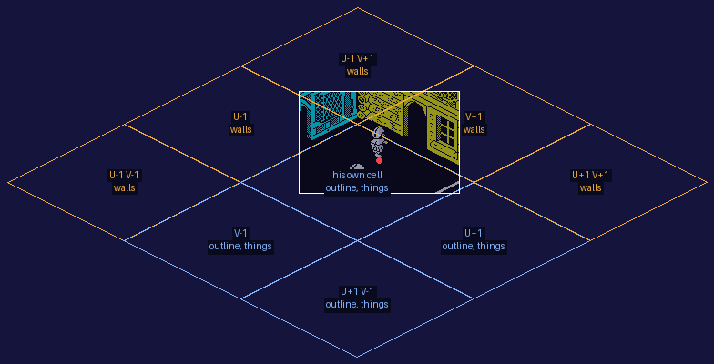
The knight's cell (9,23) and the eight round it, projected by the formula, each marked with what the drawing order did there this turn: walls behind him, outlines and things in front. The white rectangle is the play area, with this turn's picture in it, dimmed; the red dot is the knight's point.
The drawing is DRAW_CELLS, once a turn. It looks at the five cells behind or beside the knight's -- further back is smaller U and larger V, higher up the screen -- and makes a number of five bits from which of them are built on. That number picks one of 32 records of five steps in DRAW_ORDER, and each step names a cell and what to draw there: its walls if it is built on, the things in it if it is open. Then come the four cells in front: his own, V-1, U+1 and U+1 V-1, in that order, each drawn as a building's outline on the ground and then the things in it. So nothing built in front of the knight is ever drawn solid: he is never hidden behind a wall, and a building he stands in front of shows as the line where its walls meet the ground.
The 32 records, read from the game when this page was built (a step's cell is named from the knight's):
| Record | Built on | The five steps, in order |
|---|---|---|
| 0 | none | U-1 V+1 things; U-1 things; V+1 things; U-1 V-1 things; U+1 V+1 things |
| 1 | U-1 V+1 | U-1 V+1 walls; U-1 things; V+1 things; U-1 V-1 things; U+1 V+1 things |
| 2 | U-1 | U-1 V+1 things; U-1 walls; V+1 things; U-1 V-1 things; U+1 V+1 things |
| 3 | U-1 V+1, U-1 | U-1 walls; U-1 V+1 walls; V+1 things; U-1 V-1 things; U+1 V+1 things |
| 4 | V+1 | U-1 V+1 things; U-1 things; V+1 walls; U-1 V-1 things; U+1 V+1 things |
| 5 | U-1 V+1, V+1 | V+1 walls; U-1 V+1 walls; U-1 things; U-1 V-1 things; U+1 V+1 things |
| 6 | U-1, V+1 | U-1 V+1 things; U-1 walls; V+1 walls; U-1 V-1 things; U+1 V+1 things |
| 7 | U-1 V+1, U-1, V+1 | U-1 walls; V+1 walls; U-1 V+1 walls; U-1 V-1 things; U+1 V+1 things |
| 8 | U-1 V-1 | U-1 V+1 things; U-1 things; V+1 things; U-1 V-1 walls; U+1 V+1 things |
| 9 | U-1 V+1, U-1 V-1 | U-1 V+1 walls; U-1 things; V+1 things; U-1 V-1 walls; U+1 V+1 things |
| 10 | U-1, U-1 V-1 | U-1 V+1 things; U-1 V-1 walls; U-1 walls; V+1 things; U+1 V+1 things |
| 11 | U-1 V+1, U-1, U-1 V-1 | U-1 V-1 walls; U-1 walls; U-1 V+1 walls; V+1 things; U+1 V+1 things |
| 12 | V+1, U-1 V-1 | U-1 V+1 things; U-1 things; V+1 walls; U-1 V-1 walls; U+1 V+1 things |
| 13 | U-1 V+1, V+1, U-1 V-1 | V+1 walls; U-1 V+1 walls; U-1 things; U-1 V-1 walls; U+1 V+1 things |
| 14 | U-1, V+1, U-1 V-1 | U-1 V+1 things; U-1 V-1 walls; U-1 walls; V+1 walls; U+1 V+1 things |
| 15 | U-1 V+1, U-1, V+1, U-1 V-1 | U-1 V-1 walls; U-1 walls; V+1 walls; U-1 V+1 walls; U+1 V+1 things |
| 16 | U+1 V+1 | U-1 V+1 things; U-1 things; V+1 things; U-1 V-1 things; U+1 V+1 walls |
| 17 | U-1 V+1, U+1 V+1 | U-1 V+1 walls; U-1 things; V+1 things; U-1 V-1 things; U+1 V+1 walls |
| 18 | U-1, U+1 V+1 | U-1 V+1 things; U-1 walls; V+1 things; U-1 V-1 things; U+1 V+1 walls |
| 19 | U-1 V+1, U-1, U+1 V+1 | U-1 walls; U-1 V+1 walls; V+1 things; U-1 V-1 things; U+1 V+1 walls |
| 20 | V+1, U+1 V+1 | U-1 V+1 things; U-1 things; U+1 V+1 walls; V+1 walls; U-1 V-1 things |
| 21 | U-1 V+1, V+1, U+1 V+1 | U+1 V+1 walls; V+1 walls; U-1 V+1 walls; U-1 things; U-1 V-1 things |
| 22 | U-1, V+1, U+1 V+1 | U-1 V+1 things; U+1 V+1 walls; V+1 walls; U-1 walls; U-1 V-1 things |
| 23 | U-1 V+1, U-1, V+1, U+1 V+1 | U+1 V+1 walls; V+1 walls; U-1 walls; U-1 V+1 walls; U-1 V-1 things |
| 24 | U-1 V-1, U+1 V+1 | U-1 V+1 things; U-1 things; V+1 things; U-1 V-1 walls; U+1 V+1 walls |
| 25 | U-1 V+1, U-1 V-1, U+1 V+1 | U-1 V+1 walls; U-1 things; V+1 things; U-1 V-1 walls; U+1 V+1 walls |
| 26 | U-1, U-1 V-1, U+1 V+1 | U-1 V+1 things; U-1 V-1 walls; U-1 walls; V+1 things; U+1 V+1 walls |
| 27 | U-1 V+1, U-1, U-1 V-1, U+1 V+1 | U-1 V-1 walls; U-1 walls; U-1 V+1 walls; V+1 things; U+1 V+1 walls |
| 28 | V+1, U-1 V-1, U+1 V+1 | U-1 V+1 things; U+1 V+1 walls; V+1 walls; U-1 things; U-1 V-1 walls |
| 29 | U-1 V+1, V+1, U-1 V-1, U+1 V+1 | U+1 V+1 walls; V+1 walls; U-1 V+1 walls; U-1 things; U-1 V-1 walls |
| 30 | U-1, V+1, U-1 V-1, U+1 V+1 | U-1 V+1 things; U-1 V-1 walls; U-1 walls; U+1 V+1 walls; V+1 walls |
| 31 | U-1 V+1, U-1, V+1, U-1 V-1, U+1 V+1 | U-1 V-1 walls; U-1 walls; U+1 V+1 walls; V+1 walls; U-1 V+1 walls |
Every record gives all five cells, the walls of each one that is built on and the things in each that is not; the order is what changes. The build checks both. The step byte could also say draw its outline or draw nothing, but no record uses either.
The scene: cell (9,23), open ground, with buildings on all five cells behind it and one in front, the knight near its back edge (the low bytes of his U and V written as 104 and 200), and a monster of graphic 72 put in front of him, the other monster records emptied: all written at the start of the turn. The game's own code then ran the turn, stopped after each step of DRAW_CELLS:
| Step | Cell | Type | Drawn | Columns claimed | Colour |
|---|---|---|---|---|---|
| 1 | (8,22), U-1 V-1 | 5 | its walls | none | cyan |
| 2 | (8,23), U-1 | 5 | its walls | 1-5 | cyan |
| 3 | (10,24), U+1 V+1 | 22 | its walls | none | yellow |
| 4 | (9,24), V+1 | 22 | its walls | 6-12 | yellow |
| 5 | (8,24), U-1 V+1 | 3 | its walls | none | white |
| 6 | (9,23), his own | 0 | its outline, if built on (it is not) | ||
| 7 | (9,22), V-1 | 0 | its outline, if built on (it is not) | ||
| 8 | (10,23), U+1 | 34 | its outline, if built on | ||
| 9 | (10,22), U+1 V-1 | 0 | its outline, if built on (it is not) |
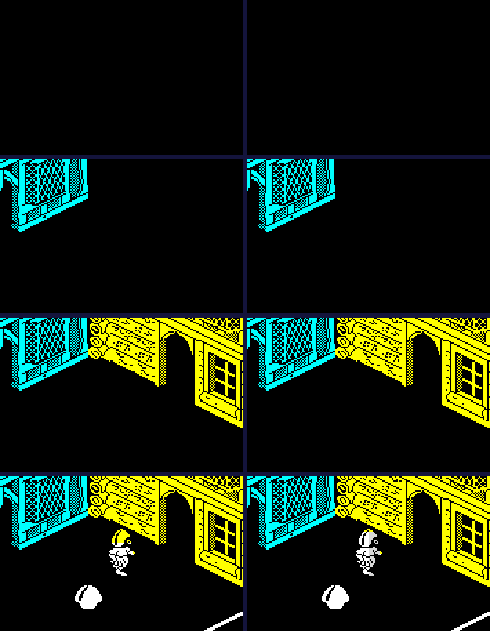
The buffer at the start of the drawing, after each of the five steps behind the knight, after the four cells in front (outlines and things), and as the turn ends, with the knight coloured: left to right and down. The colours are the attribute buffer's as it stood at each moment.
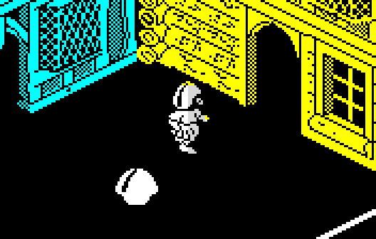
The turn's buffer, three times the Spectrum's size.
The same turn run three more times, each with one part of the drawing made to return at once -- a RET written over its first byte at the start of the turn -- shows what each part contributes:
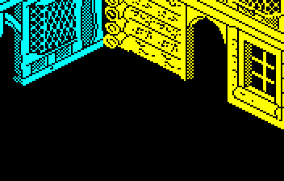
Walls only: DRAW_OUTLINE and SORT_AND_DRAW_THINGS each made to return at once.
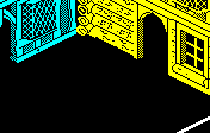
Walls and outlines: SORT_AND_DRAW_THINGS made to return.
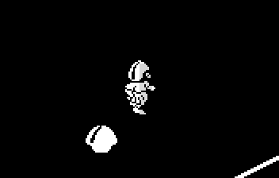
Everything but the walls: DRAW_WALLS made to return.
A building behind the knight is drawn by DRAW_WALLS. Its cell type picks a definition from BUILDING_TABLE -- two for each type, one for each way the town can be seen -- and a definition is two faces of eight columns, each column a tile on the ground and a tile 64 lines above it (TILE_TABLE). The faces stand on the cell's near edges: from its corner, eight columns 16 pixels right and 8 lines down, then eight right and up, the second face drawn mirrored. PUT_TILE writes a tile over whatever is in the buffer, keeping only the pixels either side of its 16, and COLOUR_WALL colours the column from the wall's foot to the top of the play area. So a wall hides everything above it on the screen, and walls are drawn nearest first.
That needs a record of what is already covered. The screen is taken as sixteen columns 16 pixels wide, a bit each in COLUMNS_DRAWN, and DRAW_WALL_COLUMN tests a column's bit before drawing it and sets it after: a column a nearer wall has claimed is skipped. Both instructions are written by the routine as it goes -- it patches the bit number into a BIT and a SET (TEST_COLUMN and CLAIM_COLUMN) -- and since all the cells' corners are 128 pixels apart, every tile column in a turn lies at the same place within its 16 pixels, so a tile and a screen column always coincide. Each turn starts with $E001: the column left of the buffer and the three right of it already claimed, which keeps walls from being drawn off either side, where a buffer row's bytes would run on into the next row's; and a wall stops as soon as all sixteen are claimed. In the scene every column was claimed after step 4, so the walls after it drew nothing at all.
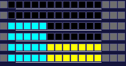
COLUMNS_DRAWN at the start of the turn (top) and after each of the five steps behind the knight: grey the four claimed before anything is drawn, each other column in the colour of the wall that claimed it, black unclaimed. The line under each row marks the eleven columns the screen shows (the next one to the left is the buffer's hidden margin).
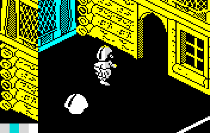
No test of the claims: the JR after the patched BIT in DRAW_WALL_COLUMN replaced by two NOPs. Every column is still claimed, but none is skipped, so a wall further back is drawn over the nearer one in front of it. The columns each turn starts with claimed are drawn too: tiles went at x 0, 224, 240 as well as the usual 16 to 192. A tile right of the buffer runs off the end of each row into the start of the row above -- the yellow down the left edge -- and off the top row into the attribute buffer, which is where the stray cells at the bottom left come from (those bytes were watched in the simulator, an instruction at a time, while this page was written: PUT_TILE wrote them).
For the four cells in front, DRAW_OUTLINE draws only the line where a building's walls meet the ground, all the way round: the near two faces from the definition for this view, and the far two from the definition for the other view, which is the same building seen from behind. Under each tile is an edge picture (TILE_EDGES): a plain line, or for a tile with an archway a short stub at one end, so an archway leaves a gap in the outline. The edges are ORed into the buffer (PUT_EDGE) and claim no columns.
Where a step says the things in it, LIST_THINGS_IN_CELL lists every object record whose U and V fall in that cell, at DRAW_LIST, and SORT_AND_DRAW_THINGS draws them back to front. A thing belongs to one cell only, by the high bytes of its position, and is drawn with that cell's things. Each is drawn whole, through its mask (DRAW_SPRITE), so what is drawn later covers what was drawn before. The sort is the earlier games' in two dimensions: the first thing not yet drawn is the candidate, every later one is compared with it by their boxes' sides in U and V, and one further back takes its place; at the end of the list the candidate is drawn. The comparison's eighteen outcomes go through DEPTH_TABLE:
| Outcome | U | V | Routine | ||
|---|---|---|---|---|---|
| 0 | the candidate wholly at larger U | wholly at larger V | DEPTH_KEEP | the candidate stays | |
| 1 | they overlap in U | wholly at larger V | DEPTH_KEEP | the candidate stays | |
| 2 | the candidate wholly at smaller U | wholly at larger V | DEPTH_KEEP | the candidate stays | |
| 3 | the candidate wholly at larger U | overlapping in V | DEPTH_SWAP | the other becomes the candidate | |
| 4 | they overlap in U | overlapping in V | DEPTH_BY_CORNERS | decided by their nearest corners | |
| 5 | the candidate wholly at smaller U | overlapping in V | DEPTH_KEEP | the candidate stays | |
| 6 | the candidate wholly at larger U | wholly at smaller V | DEPTH_SWAP | the other becomes the candidate | |
| 7 | they overlap in U | wholly at smaller V | DEPTH_SWAP | the other becomes the candidate | |
| 8 | the candidate wholly at smaller U | wholly at smaller V | DEPTH_KEEP | the candidate stays | |
| 9 | the candidate wholly at larger U | wholly at larger V | turned round | DEPTH_KEEP | the candidate stays |
| 10 | they overlap in U | wholly at larger V | turned round | DEPTH_SWAP | the other becomes the candidate |
| 11 | the candidate wholly at smaller U | wholly at larger V | turned round | DEPTH_SWAP | the other becomes the candidate |
| 12 | the candidate wholly at larger U | overlapping in V | turned round | DEPTH_KEEP | the candidate stays |
| 13 | they overlap in U | overlapping in V | turned round | DEPTH_BY_CORNERS | decided by their nearest corners |
| 14 | the candidate wholly at smaller U | overlapping in V | turned round | DEPTH_SWAP | the other becomes the candidate |
| 15 | the candidate wholly at larger U | wholly at smaller V | turned round | DEPTH_KEEP | the candidate stays |
| 16 | they overlap in U | wholly at smaller V | turned round | DEPTH_KEEP | the candidate stays |
| 17 | the candidate wholly at smaller U | wholly at smaller V | turned round | DEPTH_KEEP | the candidate stays |
Nine outcomes for how two boxes lie on the two axes, and nine more with the town turned round, when further back is the other way. Knight Lore's table has 27, for three axes (its depth-sort page). Unlike the earlier games, a pass carries on down the list from a new candidate rather than going back to the top, so it can never go round in a circle and needs no chain of candidates to catch one; the price is that a new candidate is never compared with the things the pass has already gone by.
A worked example: cell (6,7), the knight at its middle, with a bonus (graphic 3) put behind him, one object (graphic 7) in front and another (graphic 6) beside him, and the monsters cleared. Run in the simulator and stopped at every call of DRAW_SPRITE while his cell's things were drawn, the order was record 8 (graphic 3), record 0 (graphic 24), record 1 (graphic 40), record 10 (graphic 6), record 9 (graphic 7): the bonus behind him first, then his legs and top, the object beside him, and the one in front last.
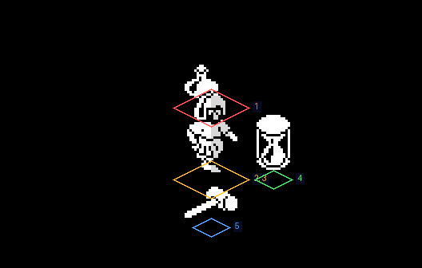
The five records' boxes on the ground, where the projection puts them, numbered in the order the depth sort drew them. The knight's legs and top share one box.
Everything is drawn into BUFFER, 24 bytes by 112 lines, whose first line is the bottom of the play area: the game's y counts up the screen, so in memory the picture is upside down. Each row's first two bytes are a margin the screen never shows, which takes a sprite drawn at the left edge. At the end of the turn COPY_BUFFER copies it to the screen with the stack pointer: SP is pointed just past the end of a screen line and each PUSH puts two buffer bytes on it, 11 to a line, while HL reads the buffer backwards -- from the bottom line up. COPY_ATTR_BUFFER does the same for the attributes, and SHOW_PLAY_AREA then clears both buffers, again by PUSHing. Interrupts are off the whole game, so nothing else can use the stack meanwhile. The whole play area is copied every turn, whatever changed.
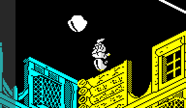
The buffer as it lies in memory, first row at the top: the picture upside down, with the two hidden bytes of each row dimmed at the left.
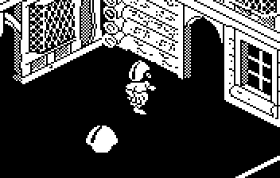
The same pixels the right way up, as the copy puts them on the screen.
Tiles and sprites are drawn at any even pixel through tables MAKE_TABLES builds at every new game: for each byte, shifted right two, four and six places, the part that stays in its byte and the part that falls into the next (SHIFT_TABLES), the same for the byte reversed (MIRROR_TABLES), and every byte reversed (REVERSE_TABLE). Bit 0 of x is ignored, so things move across the screen two pixels at a time. A tile on a building's second face is mirrored as it is drawn; a sprite is turned round in place, its bytes rewritten, when a thing faces the other way (TURN_SPRITE), as the earlier games do (Alien 8).
The attribute buffer, ATTR_BUFFER, is cleared every turn to bright white ink on black -- or on the paper a dying villain flashes -- and the walls colour it: a wall's ink is bright green, cyan, yellow or white by the two low bits of its cell's type, from its foot up to the top of the play area. The outlines and the things take whatever colour is where they are drawn, so a monster in front of a yellow wall is yellow where they overlap. The knight is the exception: every turn the four rows of two cells where he always stands are coloured by the hits he has left (COLOUR_KNIGHT), white, yellow or green.
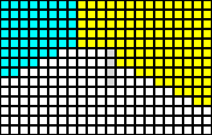
The scene's attribute buffer alone, a square for each character cell: its ink inside a border of its paper. The walls' colours run up from their feet. The four cells not bright are the right-hand halves of the knight's four rows of two, which his colouring leaves so.
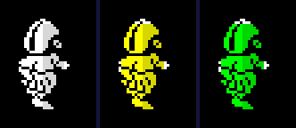
The knight with three hits left, two and one (HITS written at the start of the turn).
Z or SYMBOL SHIFT turns the town round, to be seen from the other side (TURN_TOWN). Nothing in the town moves. Everything the drawing reads is read through the view instead: LOOK_UP_CELL reads the map backwards, TURN_CELL turns a cell's column c into 31 - c and its row r into 31 - r, positions become their distance from the town's far edge, each building uses its other definition -- the two faces the first one left out -- and the depth sort adds 9 to its outcomes. So what was in front of the knight is now behind him, drawn as walls, and what was behind him is outlines. The panel's heading changes from north to south.
The scene the usual way round.
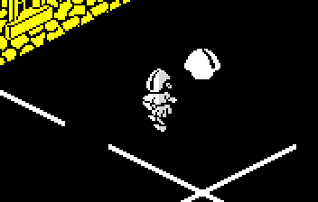
The same turn with bit 0 of VIEW set at its start: the same place seen from the other side.